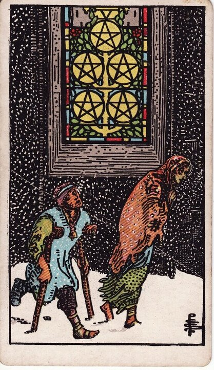

Minor Arcana · Suit of Pentacles
Five of Pentacles Tarot Card Meaning
The Five of Pentacles is the cold outside the lit window - hardship, insecurity, and help closer than it looks. Want to know what it means in your spread? Every reader on our line is hand-vetted - connect in under 60 seconds, $1 for your first minute, hang up anytime.
- Hand-vetted readers
- Available 24/7
- Hang up anytime

Five of Pentacles - What It Shows
Two figures trudge through snow past a brightly lit church window with five pentacles set in stained glass. They're cold, hurt, and looking down - and they walk right past the warmth and help that's literally beside them. After the grip of the Four, the Five is what happens when fear or shame blinds you to the support that exists: hardship made lonelier than it has to be.
Five of Pentacles Upright Meaning
Upright, the Five of Pentacles is hardship, insecurity, and isolation - financial strain, ill health, exclusion, or feeling left out in the cold. Its quiet mercy is the lit window: help is nearer than the suffering admits. Its core message is the lack is real, but you don't have to face it alone - look up.
Five of Pentacles Reversed Meaning
Reversed, the cold lifts. Recovery, the end of hardship, accepting help, finding the church door, and hope returning. Less positively, it can be deepening isolation or refusing the support that's offered.
Five of Pentacles in Love & Relationships
In love, the Five of Pentacles is feeling unsupported, insecure, or left out in the cold within a relationship - or hardship straining a connection. Example: a caller feeling alone inside a relationship drew this card; the read named the cold honestly while pointing to the lit window - support was available if she'd ask rather than suffer it silently.
Five of Pentacles in Career & Money
For work it's financial hardship, job loss, insecurity, or feeling shut out. Example: someone in a tight financial stretch and too proud to ask for help pulled this card; the message validated the difficulty and gently challenged the isolation - the help on the card only works if you walk toward it.
Five of Pentacles as Advice
As advice: ask for help. The hardship is real, but pride or shame is keeping you walking past the warmth - reach out, accept support, and stop facing it alone.
Five of Pentacles Reversed in Love & Career
Reversed, this card is often the more hopeful of the two. In love, it's coming in from the cold - a relationship stabilising, support finally accepted, reconnection after a hard stretch; the harder version is isolation deepening because help keeps being refused. In career, reversed it's financial recovery, a job turning around, or accepting assistance - versus sinking further by going it alone. The reversed Five's question is whether you're walking toward the warmth or away from it. A live reader can help you tell recovery from continued isolation.
What People Ask About the Five of Pentacles
The questions readers hear most about this card:
"Does it mean money trouble?"
Often - financial strain or insecurity, plus the emotional isolation around it.
"Five of Pentacles as feelings?"
Left out, unsupported, "I feel alone in this" - sometimes rejected.
"Is there help available?"
Yes - the lit window is the point; support is nearer than it feels.
"Will things get better?"
Reversed especially points to recovery and the cold ending.
Five of Pentacles - Yes or No?
Leans no, weighted by lack. Reversed shifts toward yes as recovery and help arrive.
Five of Pentacles Timing in a Reading
Timing is the least precise thing tarot does, so treat this as a lean, not a date. The Five of Pentacles describes a hardship phase more than an event - readers usually frame it as present and lasting until help is accepted or circumstances turn, often weeks to months. Reversed signals the turn toward recovery. A live reader reads timing from the full spread and your question far more reliably than the card alone.
Five of Pentacles Card Combinations
Context changes everything - a few pairings readers see often:
Five of Pentacles + Six of Pentacles
Hardship met by help - support arriving after lack.
Five of Pentacles + The Star
Hope and healing after a cold, difficult stretch.
Five of Pentacles + Five of Cups
Material lack compounded by grief - double isolation.
Five of Pentacles in a Tarot Reading
A meanings page is the map; a live reading is the territory. The Five of Pentacles shifts with its position and the cards around it - which is what a hand-vetted reader interprets for your question. See the full Suit of Pentacles, all 56 cards on the Minor Arcana hub, or start a phone tarot reading.
What Does the Five of Pentacles Mean for You?
A meanings list is the map; a live reading is the territory. We'll connect you with the right hand-vetted tarot reader in under 60 seconds. $1/min first call · 15 minutes for $10 · hang up anytime · 100% satisfaction promise.
Call (888) 920-6662 NowFive of Pentacles - Frequently Asked Questions
What does the Five of Pentacles mean?
Hardship, insecurity, and isolation - with help closer than it seems.
What does it mean reversed?
Recovery, the end of hardship, and accepting help - or deepening isolation.
What does the Five of Pentacles mean in love?
Feeling unsupported or left out in the cold, with support available if sought.
Is it a yes or no card?
Leans no, weighted by lack; reversed shifts toward yes.
How much does a reading cost?
First-time callers pay $1/min, or 15 minutes for $10, and you can hang up anytime.
Get Your Tarot Reading Now
Connected to a hand-vetted reader in under 60 seconds, the cards pulled on your real question, and you hang up with clarity.
Call (888) 920-6662